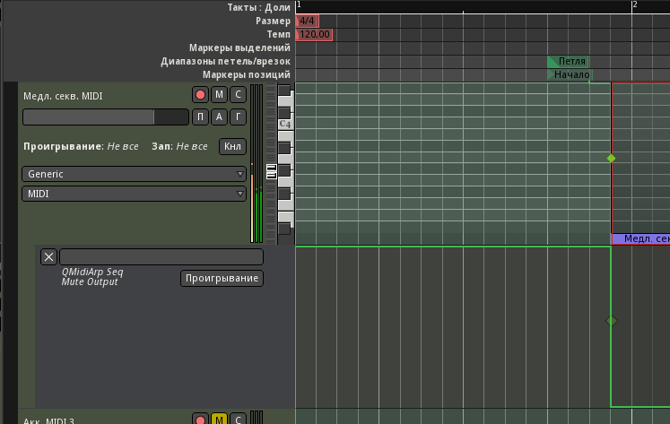

Аккомпанемент - это партии, которые исполняют ритмические и гармонические рисунки на фоне лидирующей партии. В ритме они дополняют ударные, а в гармонии - подклад, связывая всё в единое целое, создавая звуковую платформу для лида. Можно пускать одновременно несколько совершенно разных партий аккомпанемента. Если удастся заставить их хорошо звучать совместно, это придаст композиции яркость, насыщенность, красоту. Мелодически партии аккомпанемента не должны быть слишком сложными, поэтому зачастую для них используются арпеджиаторы и простые повторяющиеся последовательности.
В электронной музыке, особенно танцевальной, часто вообще не бывает какой-то конкретной мелодии, а гармоническая структура композиции весьма условна. Из-за этого лид не может сыграть ничего выделяющегося и растворяется в аккомпанементе. И наоборот, партия аккомпанемента может взять на себя функциональную роль лида, т.е. арпеджиатор или секвенция аккомпанемента запросто может оказаться солирующей партией.
Создадим три MIDI-дорожки Акк. MIDI с инструментом-заглушкой Reasonable Synth, по ходу добавив для них группу Аккомпанемент. В окне микшера аудио-выходы от них подключим к имеющейся шине Аккомпанемент через матрицу маршрутизации (со входа шины). MIDI-входы, как обычно, в Claudia подключаем к входам комнаты. Две нижние дорожки пока заглушим кнопкой М на заголовке, а на первой перед Reasonable Synth добавим фильтр MIDI-каналов (разрешаем только четвёртый канал). В контекстном меню дорожки Выбор каналов сразу выбираем четвёртый канал. Включим мониторинг входа кнопкой на линейке микшера.


Переименуем дорожку в Секвенция MIDI, это можно сделать из контекстного меню по клику на названии в линейке микшера. С выбором тембра пока повременим. Вместо этого добавим после фильтра каналов плагин QMidiArp Seq (категория Instrument). В интерфейсе плагина выбираем входной канал 4 (третий пока зарезервируем для возможного второго подклада). Канал выхода не пойдёт дальше синтезатора ниже, так что можно оставить первый. Плагин представляет собой отличный монофонический пошаговый секвенсор, в котором есть всё необходимое для создания линии аккомпанемента.

Нажав переключатель записи, можно пошагово записать последовательность с MIDI-клавиатуры (кстати, это можно делать и во время воспроизведения). Если включен переключатель Note (а его лучше оставить включенным), то ноты вводить лучше в строе С. Вся секвенция при воспроизведении будет транспонироваться в соответствии с нажатой на клавиатуре ноте. Паузы делаются правым щелчком на ноте.
Включим петлю, нажмём на MIDI-клавиатуре "ля" (4-й канал) и попробуем создать рисунок, который перекликался бы с ударниками и басом. Не сильно мелодичный, чтобы его можно было играть хотя бы на тонике и доминанте. Длину ноты (параметр Note Length) подберём небольшую, чтобы последовательность играла стоккато. Пресет для Ardour можно скачать здесь. Скопировать в ~/.lv2/ и перезапустить Ardour.

Теперь попытаемся найти правильный тембр для этой секвенции: удаляем Reasonable Synth, пробуем разные синтезаторы и патчи. На этом этапе намного чаще, чем можно предположить, возникает ситуация, когда ничего подходящего найти не удаётся. Перепробовав десяток синтезаторов и тысячи программ к ним, - не по одному разу, - пытаясь модифицировать их, затратив, порой, несколько дней на всё это, в итоге заканчиваешь тем, что создаёшь свой звук в каком-нибудь синтезаторе практически с нуля. Предустановки могут звучать волшебно, пока играют сами по себе, а стоит включить композицию на их фоне - вся красота пропадает, тембр никак не удаётся втиснуть в звуковую систему координат композиции. Но в переборе звуков есть свои плюсы: можно расслышать особенности и ознакомиться с возможностями синтезаторов.
Для первой ритмической секвенции будем использовать Obxd, эмулятор Oberheim OB-X/Xa/8. В KXStudio он без фабричных пресетов, несколько можно скачать здесь (тоже распаковать в папку ~/.lv2). Архив включает и наш новый патч (называется Sequence). Процесс создания патчей к синтезаторам - отдельная большая тема за рамками этого гайда. Только одно практическое замечание: секвенции и арпеджио иногда звучат скучновато, поэтому можно приукрасить эти партии медленной трансформацией тембра. Это может быть плагин обработки - фейзер, фланжер, внешний фильтр, а может быть модуляция параметров самого синтезатора при помощи LFO на низких значениях. Это потом хорошо звучит с длинной задержкой. Можно также автоматизировать параметры на дорожке Ardour.

Теперь самое приятное - секвенцией можно поиграть. Зациклим весь фрагмент и включим воспроизведение в Ardour. С текущими настройками по нажатию MIDI-клавиши секвенция транспонируется на соответствующую ноту, а также реагирует на скорость нажатия. Причём, если смена ноты происходит где-нибудь в середине секвенции, она не перезапускается, на новую высоту транспонируются недоигранные ноты. Для этого должна быть отключена кнопка с буквой D (Defer mode), иначе паттерн всегда будет доигрываться до конца перед сменой ноты.
Клавишу можно не зажимать, и это очень удобно при игре вживую - можно отвлекаться, пока инструмент играет. Но придётся автоматизировать кнопку Mute, иначе QMidiArp Seq будет всё время включаться при воспроизведении. Через меню добавим трек автоматизации обработчика.
В Obxd нет встроенных пространственных эффектов на выходе (дилэй, эхо, реверб). Но если бы и были, их необходимость на этапе записи является спорной. Их точно нужно отключать, когда партии записываются на звуковые дорожки, потому что при сведении невозможно будет изменять их параметры. При работе в DAW с виртуальными синтезаторами, управляемыми по MIDI и автоматизацией, их можно и оставлять включенными, поскольку контроль над параметрами никогда не теряется. А послушать, как партия, примерно, будет звучать с задержкой или реверберацией бывает полезно с самого начала. С другой стороны, слишком много пространственных эффектов на разных партиях делают из звука кашу, в которой сложно разобраться, что мешает процессу создании композиции. Универсального ответа нет; в нашем случае эффекты были оставлены на дорожке подклада, а на этой дорожке с Obxd можно временно добавить плагин задержки (например, Delay/Calf Vintage Delay) на время игры и записи, а потом заглушить или просто удалить его.
Переключим состояние на Проигрывание и карандашом нарисуем переключения параметра. Начинается он с позиции 1 (включено), а за одну восьмую до цифры переходит в значение 0 (отключено). Получается небольшое вступление. Оканчиваем (возвращаем значение 1) ровно на конце последнего такта.

Сразу запишем партию с MIDI-клавиатуры, MusE на этот раз не используем. Перед отключением параметра Mute играем нижнее ля, чтобы секвенция запустилась на правильной ноте. Отквантуем записанное по 1/8 (Доли/2). Почти все ноты сыграны за 1/8 до начала такта (или второй половины такта в местах где такт делится). Исключение - ноты вступления перед 2-м и 18-м тактами, которые сыграны за 1/4 до такта. Отключаем мониторинг входа и слушаем результат. Переключения с субдоминанту на доминанту во второй половине выглядят опасно, но на самом деле их там не происходит - в месте подъема играет нота на полтона выше.
Промежуточный рендер:
СеквенцияДля следующей дорожки, как обычно, устанавливаем фильтр MIDI-каналов (впускаем 5-й канал) и выберем пятый канал для воспроизведения и записи в меню дорожки. Переименуем её в Медл. секв. MIDI, потому что здесь будем использовать более медленную последовательность, играющую восьмыми нотами. Добавляем после фильтра QMidiArp Seq, подбираем или вводим пошаговой записью наигранную заранее секвенцию.

Настройки здесь немного отличаются. Разрешение (параметр Resolution, задающий число шагов на долю) - 2 (восьмые ноты), а длина (Length, число долей в секвенции) - 8, то есть, два такта.
На предыдущей дорожке паттерн занимал один такт, и проблем с ним не было: его можно запускать с любой цифры, и он будет играть одинаково. Новый паттерн должен запускаться с нечётного такта относительно начала фразы, чтобы звучать правильно. Сейчас у нас всё в окне редактора смещено на один такт вправо, а это значит, что в отрывке секвенция будет стартовать с середины, а не с начала. Эту загвоздку можно было бы устранить, сдвинув весь материал ещё на один такт вправо, но, вообще, это неверное решение. В будущем пришлось бы отслеживать, чтобы отрывки с этой секвенцией обязательно начинались с чётной цифры, что не всегда возможно.
Поэтому включен параметр Restart, будет перезапускать последовательность при каждом нажатии ноты. Остаётся только нажать ноту в начале первого такта отрывка. Эту также можно использовать для перезапуска паттерна до его окончания.
С высотой здесь мудрить не будем, на всём протяжении отрывка играем ля первой октавы. С ритмом можно немного поиграть, зацикливая первый такт секвенции. Прямо в Ardour запишем 16 тактов. Скопируем их вправо и автоматизируем глушение секвенции на границах тактов.
Как показывает практика, при рендеринге секвенция может запускаться с опозданием на 1/8, видимо, из-за того, что слишком поздно получает ноту старта. Исправить это можно, сдвинув регионы влево на 1/16. Этого недостаточно, чтобы она сбивалась назад при обычном воспроизведении (разрешение 1/8), и хватает для того, чтобы излечить проблему с неверным рендерингом.
Подберём синтезатор для новой партии. На этот раз выбор пал на Helm, современный синтезатор с богатыми возможностями модуляции. Немного помучившись, создаём подходящий звук для этой партии. Кажется, формантный фильтр звучит жестковато, поэтому добавим хоруса (Chorus/Calf Multi-Chorus).
Пресеты к QMidiArp Seq, Helm и хорусу для этой партии можно скачать по ссылке. Рендер:
Медленная секвенцияДля третьей дорожки (переименуем в Арпеджио MIDI) используем 6-й канал MIDI. Добавляем фильтр каналов, выбираем шестой канал для воспроизведения и записи в диалоге выбора каналов в контекстном меню. Отключим приглушение. Перед синтезатором вставим плагин QMIDIArp Arp.
Интерфейсом он похож на пошаговый секвенсор, используемый выше, и работает он похоже, но не играет секвенции, а определённым способом перебирает ноты зажатых в данный момент MIDI-клавиш. Когда включена синхронизация с хостом, играть он будет только при включенном в Ardour воспроизведении/записи. Можно фильтровать ноты по высоте и скорости нажатия: тогда некоторые будет обрабатываться арпеджиатором, а не попавшие в фильтр будут играться как есть. В Arp есть несколько простых пресетов, но он программируемый, и можно заставить его играть что угодно, используя текстовую последовательность (настоящий UNIX-way).
Не усложняя, попробуем что-нибудь поиграть простым арпеджиатором с 16-ми долями. Управлять арпеджиатором не так легко, как пошаговым секвенсором, поэтому для записи и редактирования используем MusE в комнате Эксперименты. Добавим MIDI-трек Arp и назначим для него 6-й канал.

Растягивать не станем, четырёх повторяющихся тактов достаточно. Если играть тремя нотами, получатся красивые акценты на слабых долях. Немного приукрасим сбивками через укороченную ноту. Во второй части у нас небольшое развитие темы, поэтому для неё создадим вариацию.


Записываем в Ardour, отключаем мониторинг входа. Первый вариант и три его копии помещаем на первую отрезка, второй - на вторую.
Удалим Reasonable Synth и подберём синтезатор. Хочется какой-нибудь простой, сухой звук, чтобы ухо отдыхало от насыщенных тембров других партий. Потом можно будет приукрасить его фэйзером. Для Linux неплохие синты, подходящие для этого: amSynth и WhySynth. Пробуем второй. Правда, Ardour не поддерживает DSSI, поэтому придётся обернуть его в стойку Carla. Итак, после арпеджиатора вставляем Carla Rack (По категории/Plugin/Carla Rack). Открыв стойку, ищем и добавляем в неё WhySynth. В настройках включаем монофонический режим и пробуем найти подходящий патч.
По ходу выясняется, что партия сыграна слишком высоко. Исправим транспонированием на октаву вниз, выбрав по одному региону из наборов связанных копий.
Находим подходящий патч - Tree's House. После WhySynth вставим фэйзер Plugins/Calf Phaser. Настройки по умолчанию пока сойдут. Сделаем подклад немного потише (вообще-то там требуется медленный компрессор, но пока обойдёмся этим). Нужно заметить, что на текущем этапе фейдеры микшер лучше вообще не трогать и сохранять все значения на нулях. Громкость, если нужно, исправлять в синтезаторах, а микшер оставить в покое до этапа сведения.
Рендер с добавленным арпеджиатором.
АрпеджиаторСамое трудоёмкое позади, осталось внести коррекции, чтобы всё созданное звучало вместе хорошо и правильно. Одно из преимуществ наличия чернового редактора (MusE) в том, что партии не жалко редактировать, кромсать: всегда можно вернуться к оригиналу, если что-то пойдет не так. И ещё психологический момент: сочинённое с такими усилиями просто жалко отправлять в корзину, а тут всегда остаётся бэкап.
Начнём с подклада. Музыкальная фраза слишком длинная и скучная. Пока она тужится разрешиться, уже можно забыть, с чего там всё начиналась. Ближе к концу 16-тактовых отрезков кажется, словно играют какие-то случайные непредсказуемые аккорды. Такие длинные фразы иногда используются в современном мелодическом трансе, но в нашей композиции это звучит не очень органично.
Её надо упростить и укоротить, заменяя развитие повторениями, да и вообще переосмыслить в свете вновь появившихся инструментов. Пока наиболее удачно звучит часть между цифрами 18 и 26, которая является повторением первой четверти отрывка (2-10). Значит, это и есть наша основа, а всё между цифрами 10-18 - лишнее. Поработаем ножницами и скопируем повторение первой четверти на это место.
Стало звучать лучше. Но в завершении последние четыре такта плохо сочетаются с арпеджиатором. В подкладе у нас каденция, и удалять там ничего не стоит, поэтому придётся поправить арпеджиатор. Отсоединим и отредактируем парочку последних регионов так, чтобы они лучше сочетались с играющим в это время подкладом. Обязательно стремимся сохранить подобие с регионом слева, в идеале нужно переставить только пару нот.
Медленный ритм звучит чересчур прямолинейно и как-то топорно. Попробуем аккуратно изменять его рисунок, пытаясь превратить во что-нибудь более интересное. На месте первой сбивки можно добавить дополнительную, в середине второй доли такта - так она будет звучать интереснее.
Рендер после исправлений.
Арпеджиатор